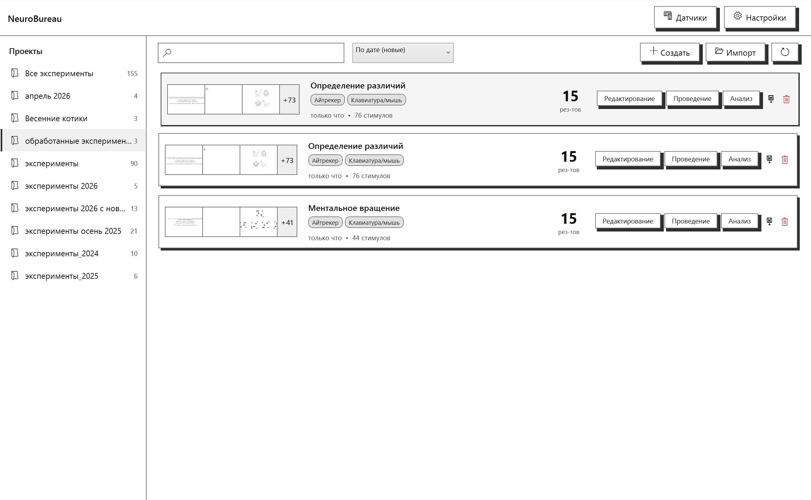
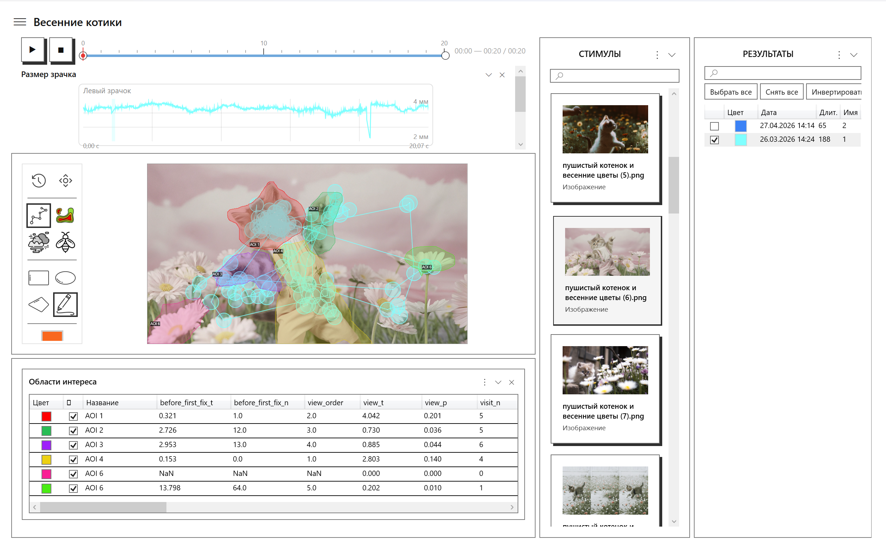
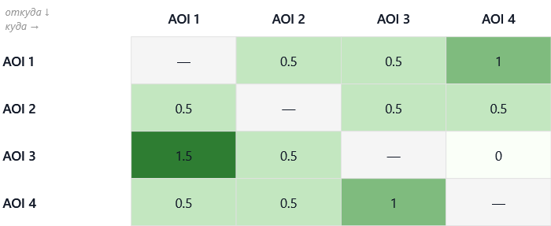
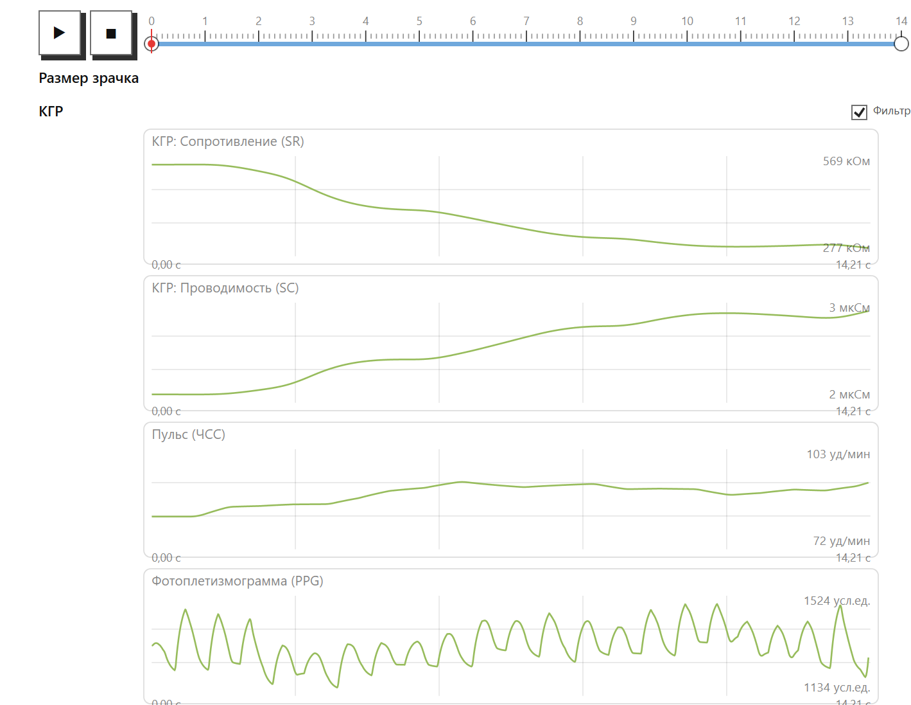
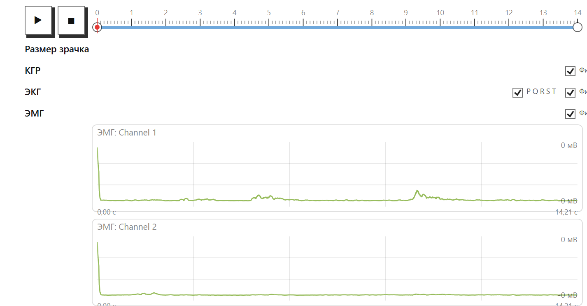
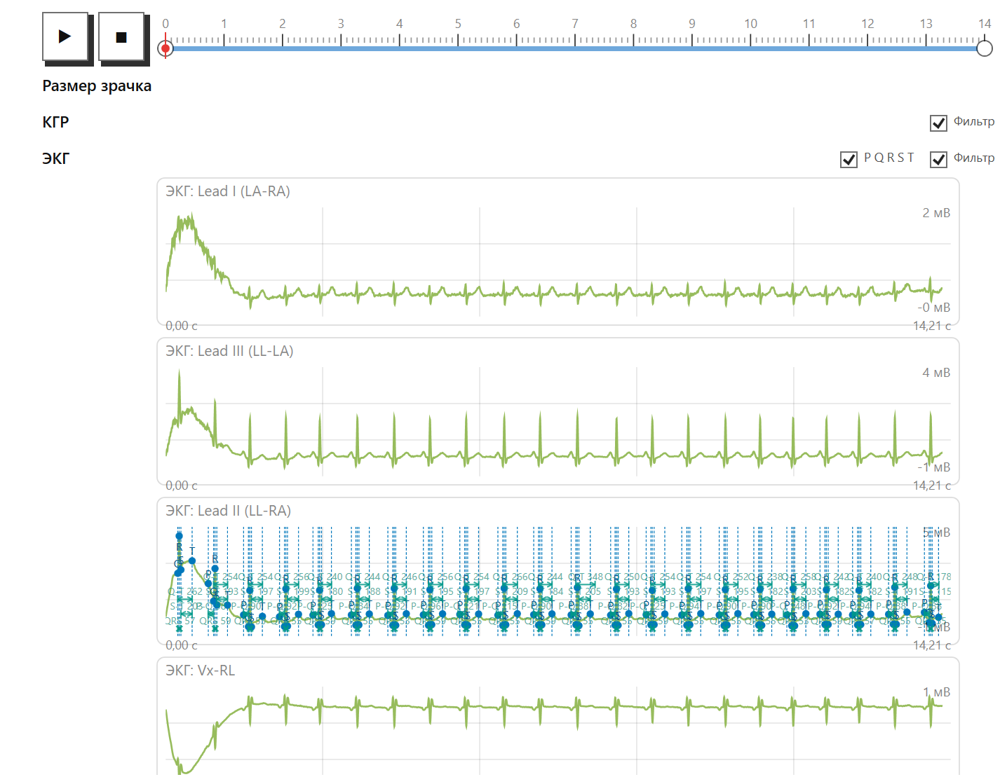

Программная платформа для психофизиологических исследований и регистрации движений глаз.
Айтрекинг · Физиология · Анализ поведения
Синхронная регистрация и анализ глазодвигательной активности и физиологических сигналов при предъявлении визуальных стимулов.
Полностью русскоязычный интерфейс.
Работает офлайн.
Программная платформа для синхронной регистрации и анализа глазодвигательной активности и физиологических сигналов при предъявлении визуальных стимулов.
К нему синхронно подключаются физиология (КГР, ЭМГ, ЭКГ). ЭЭГ, мимика и голос — в разработке.
Нейросетевое распознавание AU и эмоций по видео.
Транскрипция речи и анализ просодики.
Регистрация и спектральный анализ ЭЭГ-сигнала.
Четыре шага — от подготовки стимулов до управления данными.
Изображения и видео, рандомизация, анкета.
По 9 точкам, автокоррекция дрейфа.
Взгляд, зрачок, клики, клавиши.
Импорт/экспорт, проекты, поиск по результатам.


Полный пайплайн от сырого сигнала до агрегированной статистики: коррекция артефактов, детекция глазодвигательных событий, расчёт метрик по областям интереса, сравнительный и кластерный анализ.
Где смотрел, как долго, что осталось без внимания, как двигался взгляд группы.
Уникальный инструмент анализа последовательности внимания: матрица показывает, как часто и в каком направлении взгляд переходил между областями интереса.
Два режима представления. Таблица с числовыми значениями вероятностей или абсолютным количеством переходов — для строгого статистического анализа. Направленный граф — для интуитивного восприятия структуры внимания.
Помогает выявить скрытые паттерны: какие зоны связаны логически, к каким происходят постоянные возвраты, какие игнорируются. Сравнение матриц между группами участников показывает, как меняется стратегия с возрастом, опытом или при различных клинических состояниях.
→ Экспорт PNG для иллюстраций, CSV/XLSX для дальнейшей статистики

Три модуля синхронной регистрации — КГР, ЭМГ, ЭКГ. Полные пайплайны от сырого сигнала до метрик.



После завершения эксперимента — выгрузка в форматах для статистических пакетов, отчётов и презентаций.
Опишите исследовательскую задачу — подберём конфигурацию платформы, необходимое оборудование, проведём пусконаладку и обучение.